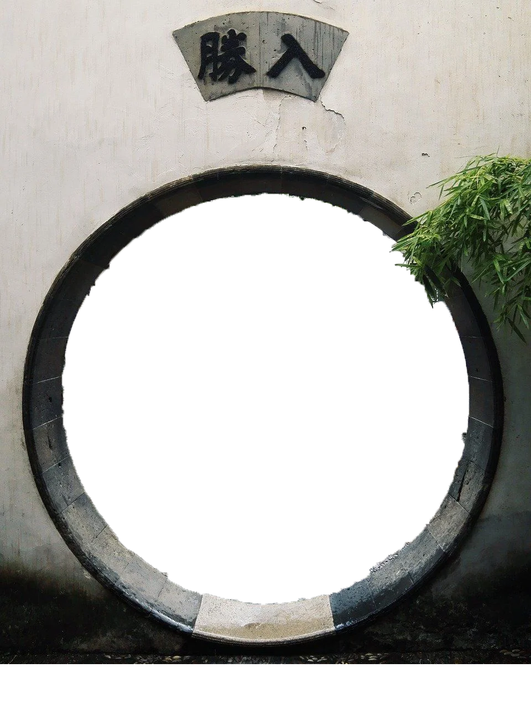
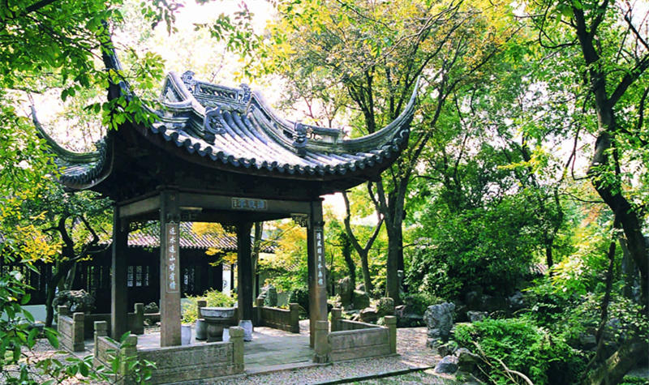
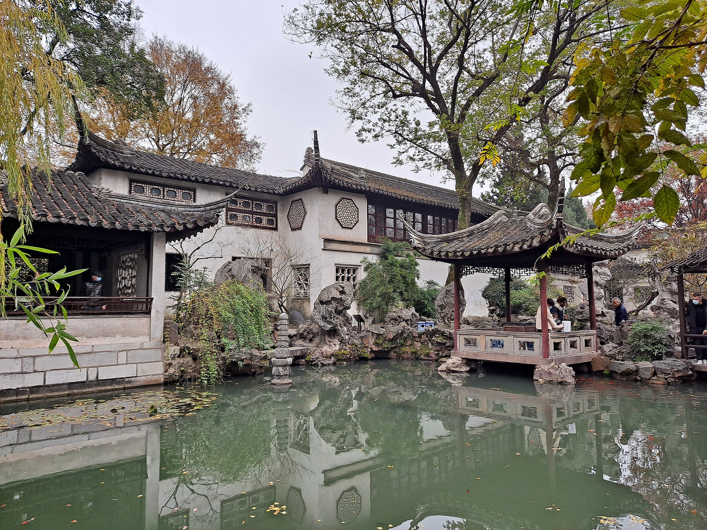
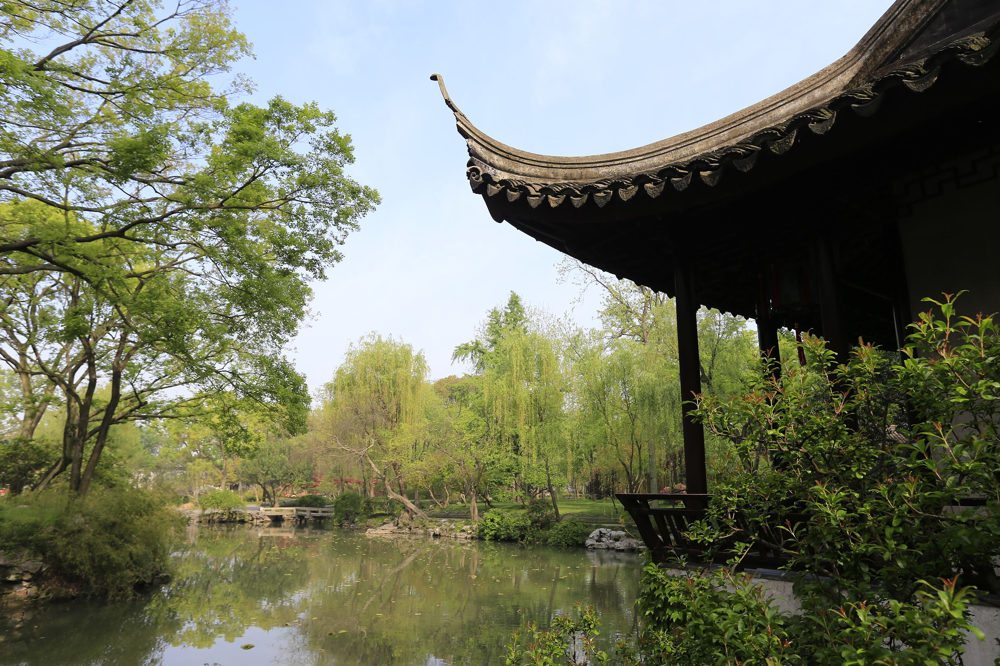

Suzhou classical gardens, or Suzhou gardens and Suzhou-style gardens, are an important genre of Chinese classical gardens and an important representative of gardens in the south of China. The artistic style of Suzhou gardens was introduced to the south from the north. This genre is dominated by classical gardens created by private individuals. Suzhou gardens began in the Spring and Autumn Period when the capital of the State of Wu was built in 514 BC, took shape in the Five Dynasties, matured in the Song Dynasty, flourished in the Ming Dynasty, and flourished in the Qing Dynasty. By the end of the Qing Dynasty, there were more than 170 gardens of various colors in Suzhou, more than 60 of which are now intact and 19 of which are open to the public. The gardens cover a small area, but they are distinguished by their mood, and are decorated and arranged in a limited space with unique artistic techniques, with endless changes of scenery. In 1997, four gardens in the city of Suzhou were inscribed on the World Heritage List as representatives of Chinese gardens under the name of Suzhou Classical Gardens.
History of Suzhou classical gardens
Suzhou's classical gardens originated in the Spring and Autumn Period, developed in the Jin and Tang Dynasties, flourished in the Song Dynasty, and flourished in the Ming and Qing Dynasties. Suzhou's private gardens were built in the 6th century BC.
During the Spring and Autumn Period, the palaces of the kings of Wu were mostly built in the landscape of Taihu Lake, which was the beginning of classical gardens in Suzhou. During the Spring and Autumn Period and the Warring States Period, there were already gardens around the time when the King of Wu built the city (514 BC). They included Xiajia Lake, Changzhou Garden, Hualin Garden, Wutong Garden, the back garden of the Wu Palace, Gusutai, Huqiu, Jiaotai, Pavilion Palace, Deer Garden and other gardens.
During the Qin and Han dynasties, local officials in Suzhou started to build gardens in their government offices. The government offices had the first elements of gardening.
From the two Han dynasties, private gardens and houses gradually emerged.
Three Kingdoms and two Jin dynasties, the rise of Buddhist architecture, outside the temple, there are attached gardens, monasteries and jungles with the nature of public gardens, for the common people to visit when incense.
During the Northern and Southern Dynasties, Jiangnan manor four cloth. Suzhou rose to simulate the natural wilderness of the first house garden, or in the landscape to create a mountain garden.
In the Sui and Tang Dynasties, Taihu Lake stone became the material for gardening.
In the Song Dynasty, Suzhou's gardening activities were active and formed a peak period. Gardening was integrated into the art of landscape painting. In addition to private gardens in urban areas, private gardens and villas appeared in the suburbs.
During the Yuan Dynasty, the literati and scholars were purposefully involved in the design of gardens, creating natural landscape gardens with moods, bringing the artistic approach of Suzhou's gardens to a new level.
During the Ming and Qing Dynasties, the construction of residential gardens in Suzhou reached a peak. From the middle of the Ming Dynasty to the Qianlong period of the Qing Dynasty, bureaucrats and gentlemen competed to build gardens. According to statistics, the heyday of the Ming and Qing dynasties, in Wu County, Changzhou, Yuanhe three counties, has accumulated more than 300 gardens and courtyards, when private gardens are not usually open to the public, there are more than this number, of which the house garden accounted for more than 90% of the total, the history of Suzhou half of the city garden pavilion, is known as the "City of Gardens".
During the Republican period, most of the famous gardens fell into disrepair and were abandoned. In the autumn of the second year of the Republic of China (1913), Half Garden (South), Crane Garden, Chang Yuan and Sui Yuan were opened one after another. At the same time, the rich and famous merchants have been building residential gardens in Suzhou, in the form of gardening, with the development of modern industry, foreign influence, changes in people's lifestyles, as well as the use of new building materials, the modern gardens and modern parks combining Chinese and Western elements appeared in Suzhou. Even the classical gardens, such as Canglang Pavilion and Lion Grove, were massively repaired and influenced by Western architectural styles. In 1927, Suzhou Park, the first park designed according to modern gardening theory, was opened.
Main Attractions
Canglang Pavilion
Canglang Pavilion, located in Sanyuan Square in the south of Suzhou, is one of the oldest gardens in Suzhou, built by poet Su Shunqin (Zi Mei) during the Qingli period of the Northern Song Dynasty (1041-1048), and was once the residence of military general Han Shizhong in the early Southern Song Dynasty. Outside the gate of Canglangjeong Garden, a vast expanse of green water circles around the garden and enters the garden via a bridge. The garden is dominated by mountains and rocks, with the Canglang Stone Pavilion on top of the mountain. There is a pond cut under the mountain, and the mountain and water are connected by a winding corridor with windows and pavilions in the corridor. The Mingdao Hall in the southeast of the rockery is the main building of the garden, and opposite to the Mingdao Hall in the east and west is the Five Hundred Famous Sages Ancestral Hall. The most southern part of the garden is built on top of the cave house of the rockery to see the mountain building, see the mountain building north of the "Cui Linglong Pavilion", and then folded to the north to the "Yang Zhi Pavilion", out of the "Yang Zhi Pavilion" can be to The "Royal Tablet Pavilion".
Canglang Pavilion is quiet and simple, natural, like a hibiscus of clear water, washed away, without a trace of powder breath.

Shizilin
The Lion's Grove, located in Panru Lane, Suzhou, east of Garden Road, was built in 1342 by Zen Master Tianru in honor of his teacher, Monk Zhongfeng. It was named "Lion's Grove" because Zhongfeng originally lived in Lion Rock in Tianmu Mountain, Zhejiang Province, and the rocky peaks in the garden resemble lions.
Lion Grove plan into a rectangle, an area of about 15 acres, southeast of the mountain, northwest of the water, surrounded by high walls. There are many lakes, rocks and rocky hills in Lion Grove, and they are exquisite. The main building in the garden is the Yan Yu Hall, with a small square hall behind the hall and the Lixue Hall. To the west, you can reach the "Finger Cypress Pavilion", which is a two-story pavilion surrounded by hipped walls and is high and exquisite. To the west of the Finger Cypress Pavilion is the ancient Five Pines Garden. The southwest corner is the See-San Building. From Mishan Building to the west, you can reach Lotus Hall. In the northwest of the hall, there is a pavilion of true interest, which is beautifully decorated with vivid figures and flowers. There are two layers of stone boats beside the pavilion. The stone boat is prepared for the shore of the "dark fragrance sparse shadow building", from which the corridor turns southward to reach the flying waterfall pavilion, which is the highest place in the garden. Garden west scenery center is "ask the plum pavilion", the pavilion before the "double immortal incense Pavilion". The south line of the Double Incense Pavilion folds east, and there is a fan pavilion in the southwest corner, with a small courtyard after the pavilion, which is fresh and elegant.
The theme of Lion Grove is clear, the depth of the scene is rich, the personality is clear, the rockery is unique, a grass and a tree is unique charm.

Lingering Garden
Lingering Garden is a renowned classical Chinese garden, dating back to 1593. It is located at 338 Liuyuan Rd. Suzhou, Jiangsu province, China. The garden is divided into 4 themed sections connected by covered walkways. The central garden encircles a pond and a grotto constructed of yellow stone granite. It was created by the noted artist Zhou Binzhong.
In 1997, the Lingering Garden was recognized as a UNESCO World Heritage Site, along with seven other Classical Gardens of Suzhou. The garden also contains two UNESCO Intangible World Heritage Arts; Pingtan and Guqin music.

Humble Administrator's Garden
The Humble Administrator's Garden is a Chinese garden in Suzhou, a UNESCO World Heritage Site and one of the most famous of the gardens of Suzhou. The garden is located at 178 Northeast Street (东北街178号), Gusu District. At 78 mu (亩) (5.2 ha; 13 acres), it is the largest garden in Suzhou and is considered by some to be the finest garden in all of southern China.
